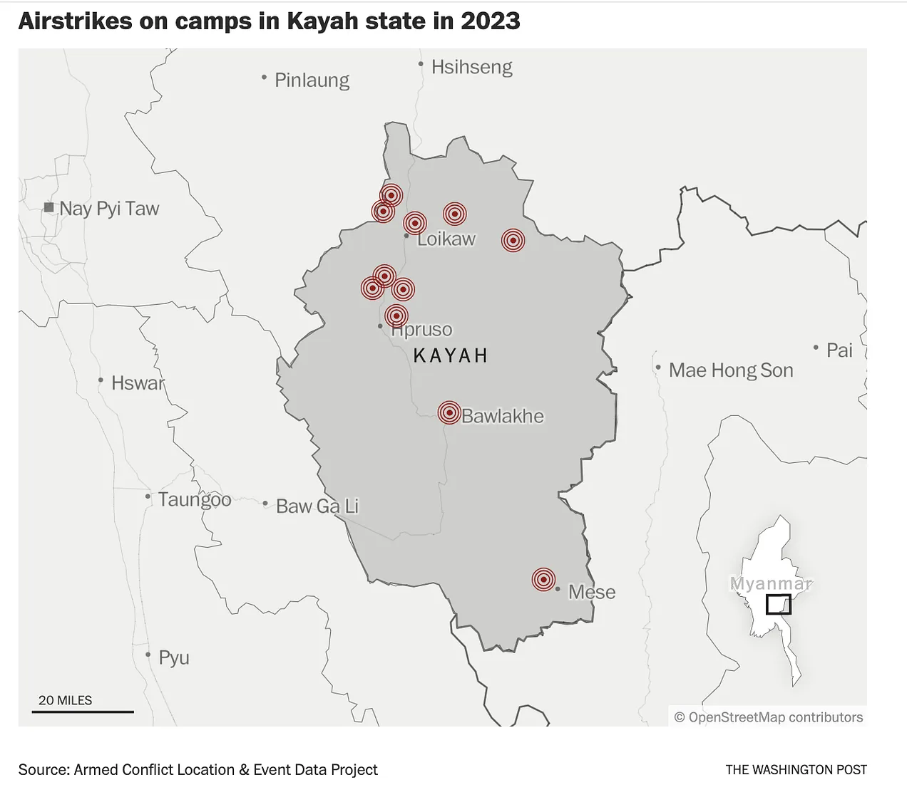

37 Myanmar
37.1 Military
Tooze
In the small southeastern state of Kayah … 60 airstrikes were carried out in the first nine months of 2023 — more than five times in all of 2022 — and at least 11 struck camps where civilians were taking refuge, according to the Armed Conflict Location & Event Data Project. Kayah sits close to the capital, Naypyidaw, and is a vital channel connecting resistance groups in the south and the north, according to an analysis by the Singapore-based International Institute for Strategic Studies. Within months of the coup, as much as 80 percent of the state’s urban population was forced to flee because of clashes between resistance fighters and the military, said local aid groups.

Source: Washington Post
37.2 Myanmar’s Polycrisis
Tooze
Myanmar is a patchwork of ethnic groups that in many cases have been caught in violent struggle for decades. The dominant force in the country since independence has been the military, which between the 1960s and the late 1980s imposed a socialist regime, and have since migrated to a crony capitalism. In 2011 they embarked on a program of opening up that led to election of a democratic government. It was on its watch that the most violent campaign against the Rohingya was launched in 2017. In February 2021 the generals seized back control, deposing the democratic government in a coup. This has triggered armed resistance, not just in Rakhine, but in the border regions adjoining Thailand and China.
On the face of it, it is an unequal fight with the military controlling the major urban areas and much of the modern economy and enjoying the backing of China and Russia. But in October of this year, in the latest escalation of violence, armed factions in three major regions launched a simultaneous attack in what has become known as the 1027 offensive. The regime was knocked onto the ropes, whilst, as measured by the World Bank, the fighting has been more intense than at any time since the February 2021 coup.
The civil war has spread disorder throughout the region with large-scale criminal gangs operating out of the Golden Triangle. Meanwhile, the regime’s extreme violence has provoked accusations of genocide, profoundly embarrassing ASEAN, the regional economic organization. The fighting disrupts border trade and further damages Myanmar’s fragile economy.
Myanmar, is a true economic disaster. Burma was once the rice bowl of Asia, the largest rice exporter in the world. During the great depression of the 1930s, Burma suffered a devastating agricultural depression and following the Japanese occupation and World War II, in the post-colonial period, the country never got back on track. From 1960 onwards it was subject to a brutal experiment in authoritarian socialism, led by the military.
By the 1970s, Myanmar had been reduced to one of the poorest countries in the world. Still today, Myanmar’s gdp per capita is lower than that of Vietnam, Laos or Cambodia, which suffered the catastrophes of the Vietnam war and the Pol Pot regime.
In 2011, a political and economic transition process began. A transitional military government staged elections in 2015. As trade opened up and foreign capital flooded in, Myanmar experienced economic growth averaging 6 percent per year, coupled with significant reduction in poverty. One of the major growth sectors, following the example of countries like Bangladesh was the garment industry.
But this growth was set back by the fallout from the massive violence in Rakhine State unleashed in 2017, the COVID pandemic of 2020 and the February 2021 coup. In addition, natural disasters continue to ravage Myanmar. Cyclone Mocha, a Category 5 cyclone that struck in May 2023 did serious damage.
According to the World Bank survey of Myanmar: “The economy in 2023 is estimated to be 30 percent smaller than it might have been in the absence of COVID-19 and the coup. Real GDP per capita is estimated to be around 13 percent below 2019 levels.”
In situation’s of crisis like this, the last resort of Myanmar regional elites and poor farmers it to retreat into various kinds of illegal activity. On the border to China, violent gangs engage in kidnapping thousands of Chinese workers into organized scam activity. Meanwhile, in the legendary Golden Triangle, the drugs trade is booming.
The drug trade is a continually shifting, global business. The Golden Triangle itself has undergone dramatic change. The area under opium cultivation is well down on its historic highs in the 1990s.
One factor driving the return to opium, is the crackdown in Afghanistan by the new Taliban regime, which has slashed opium cultivation by 95 percent since the Americans pulled out. By default Myanmar has become the biggest opium producer in the world. But the fact that the Golden Triangle is ramping up production also reflects the collapsing condition of the Myanmar economy. Powerful drug groups are entering the region offering seeds, fertilizer and even irrigation and sprinkler equipment. Impoverished peasants have no means of resisting their demands. Significantly, the crop yield has surged far more dramatically than the extent of cultivation, suggesting an improvement in farming techniques.
The drugs are not consumed in Myanmar but flow out to the international customers above all through the border to Laos, the “path of least resistance”.
The vast majority of Myanmar’s population of 54 million live and work in other areas, most of which are under the grip of the Junta, which controls most of Myanmar’s airports, banks and big cities, including the capital, Naypyidaw.
Given Myanmar’s strategic location, the obvious trajectory for its economy is to serve as an interface between China, the South East Asian regionC and the Indian Ocean.
China would certainly love to develop Myanmar in this way. China sees Myanmar and the China-Myanmar Economic Corridor as an alternative to the choke-point of the Strait of Malacca, through which most maritime trade to and from China flows and which is under US naval control. Local Burmese political actors are only too aware of this fact. Like all players in the region, the Myanmar political elite are both orientated towards the riches and power of China and cautious about its overbearing influence. The Burmese military are at times borderline “Sinophobic” in their allergy to excessive Chinese influence. In recent years this has increased their desire to strength relations with Putin’s regime in Russia.
Ironically, during the period of Myanmar’s liberalization in the 2010s, Aung San Suu Kyi, the democracy activist who became de facto leader of the country in 2016, cultivated close relations with China, specifically to distance herself from Myanmar’s military. Beijing’s support was particularly useful after Suu Kyi’s government found itself under fire from Western critics over the genocidal violence against the Rohingya.
Chinese money dwarfs all potential rivals, notably India which has offered investment totalling a few hundred million dollars.
The fortunes of Yunnan, the poor Chinese province adjacent to Myanmar, hinge on stability on the other side of the border. Chinese investors flocked across because they see Myanmar as a portal to South-East Asian economies. Oil flowing through a pipeline from Myanmar supplies a refinery that contributes 8% of the province’s gdp. …. At the terminus of the pipeline, on Myanmar’s western coast, China is bankrolling the construction of a deep-sea port which, once completed, will enable it to import oil and gas via the Bay of Bengal.
China’s secret services and military are backing not just the Junta but also have their hands in the 1027 offensive, which has brought much of the border region under the control of ethnic armies armed and controlled by China. The so-called Three Brotherhood Alliance that has carried the 1027 campaign has close links to China’s security services.
China’s longer-term strategy is undoubtedly designed to fragment the anti-junta resistance by helping individual armed groups achieve victories over limited territories in the border area in exchange for abandoning ambitions to participate in coalitions aimed at regime change. Over the medium term, China may consider this as a lifeline for the Myanmar army to keep itself in power, as well as a means of assuring dependence on China for all parties to the conflict and ultimately maximizing Chinese influence in Myanmar. However, a strategy of this kind is unlikely to be sustainable over the longer term because it is a recipe for even greater levels of instability across Myanmar. First, it fails to recognize that the Myanmar army has become completely illegitimate in the eyes of the Myanmar people. By pushing Ethnic Armed Organizations (EAOs) to sign deals with the Myanmar army, China risks provoking serious and sustained anti-China sentiment, which could imperil the security of Chinese strategic investments in Myanmar. Second, making EAOs partner with the Myanmar army would threaten their legitimacy with the public, causing them to lose the popular mandate essential to stable governance. In the end, such a strategy could prove self-defeating.
In conclusion, it would be facile to suggest strong analogies between the shatter zone of the Middle East and in South East Asia. But what is clear is that both regions are feeling the effects of shifting patterns of global geopolitics. In both arenas the influence of Western power, money and political persuasion is declining fast, dramatically relativized by the willingness of other players (notably Russia) to chance their hand, and the emergence of China as a dominant source of money, political backing and military support.